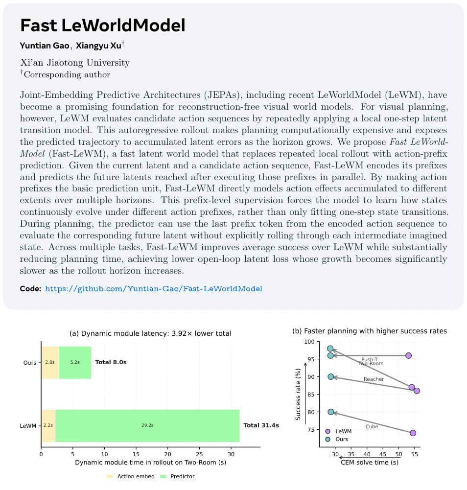
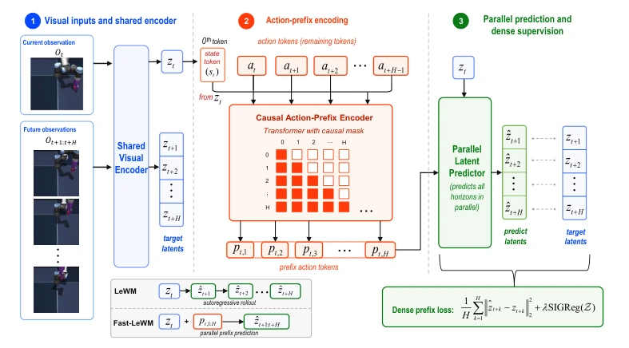
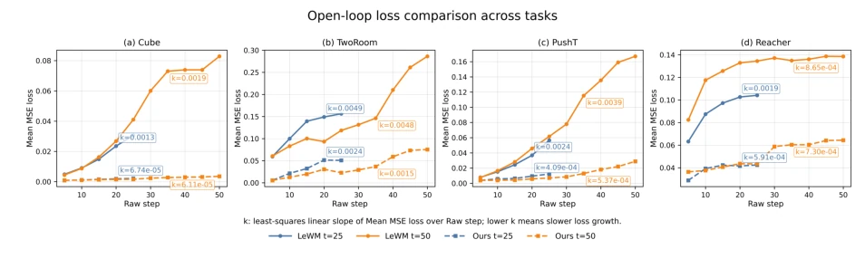
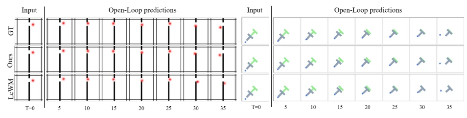

This paper provides an acceleration package for LeWM, converting the slow autoregressive process into a fast parallel one. Although LeWM is stable, each planning requires step-by-step deduction, akin to a snail crawling, and prone to accumulating errors. Fast-LeWM directly employs action-prefix, allowing the model to perceive the cumulative effect of the action sequence at a glance rather than struggling with each step individually. The results are impressive: CEM time is halved, and success rate increases. However, does this parallel prediction sacrifice certain fine-grained temporal dependencies? After all, 'one step wrong, every step wrong' is a physical law; can forced parallelism truly achieve perfect decoupling? Regardless, the experimental data stands: at least in this benchmark, it is faster and more accurate than LeWM. For embodied intelligence pursuing real-time performance, this is a commendable engineering optimization, but whether the essence of the theoretical world model is oversimplified warrants deep investigation. Furthermore, it relies on dense supervision; if data distribution shifts, how is the generalization? Currently, it appears effective only in specific simulation environments, and real-world deployment requires verification.
The core of visual planning lies in using world models to predict action consequences, but the existing LeWM (Maes et al., 2026) suffers from two fatal flaws. First is slowness; it relies on autoregressive rollout, where evaluating an action sequence requires step-by-step deduction, repeatedly invoking the dynamic module during CEM sampling, resulting in massive computational overhead. Second is inaccuracy; the latent predicted at each step serves as input for the next, causing early errors to accumulate like a snowball, rendering long-horizon predictions unreliable. Ha & Schmidhuber (2018) pointed out early that world models must support planning, yet LeWM, an architecture based on JEPA, has not kept pace in efficiency. The authors identified the bottleneck as the local one-step transition interface, which leads to rapid error growth in long-horizon prediction. Therefore, an interface capable of directly modeling multi-horizon state evolution is required to reduce recursive dependencies and enhance planning efficiency. This is not merely an engineering speedup but aims to mitigate error propagation in latent space, making planning more reliable.

Figure 1 Planning efficiency and success rate across tasks. (a) Runtime breakdown of the two dominant rollout modules on Two-Room. Our method reduces the dynamics-module time in rollout, including action encoding and latent prediction, from 31.4s to 8.0s by replacing autoregressive latent rollout with parallel prefix prediction. (b) Full CEM planning results on four tasks. Each arrow connects LeWM Maes et al. (2026) to our method under the same planning protocol, showing that our method consistently reduces CEM solve time from about 54s to about 28s while improving or maintaining task success.
The core of Fast-LeWM is reconstructing the prediction interface of the dynamic module. The overall process is divided into three steps: first, the visual encoder converts observation o_t into latent z_t; second, the Action-Prefix Encoder receives z_t and action sequence a_t:t+H-1, generating a series of prefix tokens p_t,1:H via causal Transformer, where p_t,k encodes the cumulative effect of the first k actions; finally, the Parallel Latent Predictor utilizes z_t and all prefix tokens to predict all future latents z_t+1:t+H in a single parallel pass. The innovations lie in: 1) replacing single-step transition with action-prefix, enabling the model to directly learn state evolution under different action prefixes rather than merely fitting local transitions; 2) introducing dense prefix-level supervision, where each prefix token corresponds to a future latent target, compelling the model to understand the cumulative process of action effects; 3) the prediction phase requires no recursion, with all horizons sharing a single encoding and prediction pass, significantly reducing computational cost. Additionally, an optional self-consistency penalty can be incorporated to encourage prediction consistency across different prefix decompositions.

Figure 2 Fast-LeWM training pipeline. The current observation ot is encoded into a latent state zt. An Action-Prefix Encoder takes a state-action token sequence formed by prepending a state token mapped from zt as the 0-th token to the action tokens (at, . . . , at+H−1). Under causal masking, the action-position outputs form prefix tokens (pt,1, . . . , pt,H), where pt,k corresponds to the prefix (at, . . . , at+k−1), while the 0-th output token is discarded. Using the prefix tokens together with the anchor latent, the Parallel Predictor directly generates all future latents (ˆzt+1, . . . , ˆzt+H) in one forward pass, supervised by encoded future observations through a dense multi-horizon loss. Unlike isolated one-step transition learning, dense action-prefix prediction supervises multiple
Experiments were conducted in four environments: Two-Room, PushT, Reacher, and Cube, adhering to LeWM's offline reward-free goal-conditioned planning protocol. Baselines include LeWM (Maes et al., 2026), PLDM (Sobal et al., 2025), and DINO-WM (Zhou et al., 2025). The main metrics are success rate, CEM solving time, and open-loop latent loss. Results indicate that Fast-LeWM's average success rate improved from 85.8% to 90.5%, reaching 92.0% with self-consistency added. Dynamic module time decreased from 31.4s to 8.0s, with total CEM time reduced by 48%. Open-loop error and its growth rate are both significantly lower than LeWM. Ablation studies demonstrate that dense prefix supervision and state tokens are crucial for performance; removing the former leads to degradation in long-horizon prediction. Physical state probing also reveals that Fast-LeWM retains richer physical information. This suggests that parallel prediction does not lose key physical features, but rather learns better due to more explicit training objectives.

Figure 3 Open-loop latent prediction loss across four tasks. The loss is measured in latent space against the latent states encoded from the corresponding ground-truth future frames. Compared with LeWM, Fast-LeWM consistently reduces both the initial prediction error and the growth rate of error as the state evolves along the real trajectory. This shows that the action-prefix design substantially mitigates open-loop error accumulation and provides a more error-resistant interface for modeling continuous state transitions over multiple horizons.

Figure 4 Predictor rollouts on Two-Room and PushT, visualized by decoding predicted latents. Fast-LeWM exhibits smaller open-loop prediction error than LeWM because its action-prefix design predicts target horizons without repeatedly iterating one-step next-state predictions, which helps reduce error accumulation.